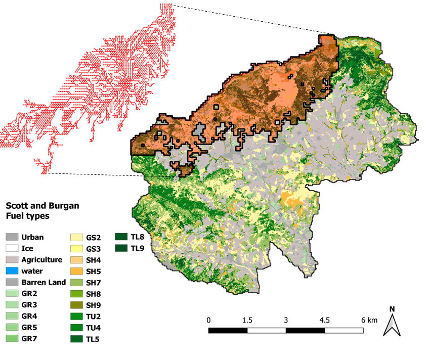
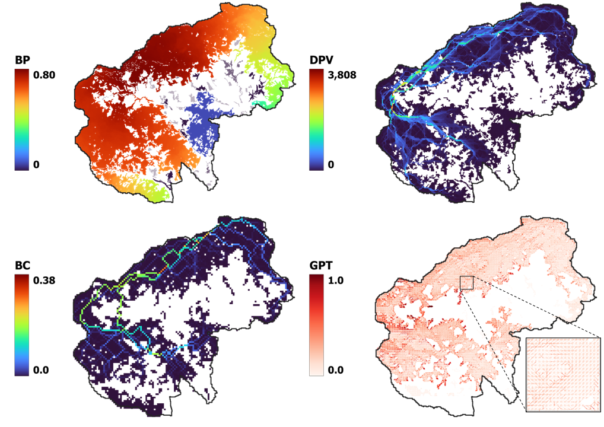

A big-scale, grid, forest fire simulator; parallel and fast (c++) nevertheless with a friendly graphical user interface for QGIS.
Originally forked from Cell2Fire, thanks to the work of Cristobal Pais, Jaime Carrasco, David Martell, David L. Woodruff, Andres Weintraub, et al.
This fire spread simulator, supports 3 fire models:
As Cell2Fire: i) the landscape is characterized as a grid, in which every cell has the same size, and the necessary information to simulate fire spread, i.e. fuel type, elevation and ignition probability, among others; ii) exploits parallel computation methods which allows users to run large-scale simulations in short periods of time; iii) the fires spread within each cell is assumed to be elliptical; and iv) it includes powerful statistical, graphical output, and spatial analysis features to facilitate the display and analysis of projected fire growth.
Installation, usage, specifications available by reading the friendly manual here.
O leyendo el manual acá
Usage (TL;DR)
- Easy: Use through QGIS desktop application
- Moderate: CLI: Download a release or get the container
- Collaborative: Clone & compile
Output examples
Previncat's Zone 60 (Catalonian Instance): forest and a simulated fire spread with its corresponding scar and growth propagation tree.

Risk metrics: Burn Probability (BP), Betweenness Centrality (BC), Downstream Protection Value (DPV), and Growth Propagation Tree (GPT).

Easy: Graphical User Interface for QGIS
- Install QGIS >= LTR version
- Add this as plugin server repo in QGIS
- Pip install python dependendiencies to use other related algorithms such as risk metrics and landscape decision optimization
- Install the plugin from the QGIS plugin manager
- Use the plugin from the processing toolbox: Use the instance downloader to get ready instance, and then simulate your first wildfire!
Full guide, how to fire2a.io/docs Plugin repo: fire2a/fire-analytics-qgis-processing-toolbox-plugin repo
Moderate: CLI
Get a Release
Go to releases (right vertical tab bar):
- Download the latest (non-draft) release version of the binary, choose platform:
- Microsoft Windows (10 or 11) also includes .dll dependencies
Cell2FireW_v<x.y.z>-Windows-x86_64-binary.zip
- Linux, targeting distribution-codename and dependent runtime libraries:
Cell2FireW_v<x.y.z>-Debian.bookworm.x86_64-binary.zip needs apt install libtiff6 libgomp1
Cell2FireW_v<x.y.z>-Ubuntu.jammy.x86_64-binary.zip needs apt install libtiff5 libstdc++6 libgomp1 libgcc1
- Most other linuxes, no dependencies. Although it may not run parallel!
Cell2FireW_v<x.y.z>-manylinux-x86_64-binary.zip
- Contains them all and more, is meant for the QGIS plugin
Cell2FireW_v<x.y.z>.zip
- Jumpstart into downloading a prepared instance, choosing:
- Fuel model:
Kitral, Scott&Burgan, or FBP-Canada (–sim <K|S|C>)
- Raster format: GeoTiff<tt>.tif or AIIGrid<tt>.asc
- Open a terminal, type the following:
# [once] make it executable
chmod +x </path/to/Cell2FireW/binary>/Cell2Fire[.suffix]
# [optional] make it accessible from other directories
export PATH=$PATH:/path/to/Cell2FireW/binar/Cell2Fire[.suffix]
# needs an empty directory to store the results
mkdir results
# run idea
Cell2Fire[.exe|Debian.boookworm|...] --input-instance-folder </path/to/instance> --output-folder </path/to/empty/results> --sim <K|S|C> --nthreads 16 > log.txt
# example
Cell2Fire --final-grid --output-messages --out-ros --sim S --nsims 2 --seed 123 --nthreads 3 --fmc 66 --scenario 2 --cros --weather rows --input-instance-folder /tmp/processing_cdcCGk/Vilopriu_2013 --output-folder /tmp/processing_cdcCGk/Vilopriu_2013/results | tee log.txt
# check the results: to convert to tiff or see the results in QGIS, use the plugin
Get the container
 , TL;DR:
, TL;DR:
# have or install podman (or docker)
sudo apt install podman
# download the container [Dockerfile](https://github.com/fire2a/C2F-W/raw/refs/heads/feature-containerize/container/Dockerfile)
wget https://github.com/fire2a/C2F-W/raw/refs/heads/feature-containerize/container/Dockerfile
# build
podman build -t c2f -f Dockerfile .
# Done! Usage mounting the instance and results directories into the container
mkdir results
podman run -v $(pwd):/mnt c2f --input-instance-folder /mnt/data/Kitral/Portillo-tif --output-folder /mnt/results --nsims 3 --sim K --grids | tee results/log.txt
Collaborative
Compile it
# dependencies
sudo apt install g++-12 libboost-all-dev libeigen3-dev libtiff-dev
# or brew
brew install gcc@12 libomp eigen boost libtiff # llvm ?
# fork & clone
git clone git@github.com:<YOU>/C2F-W.git
cd C2F-W/Cell2Fire
# compile
make
# there area other makefiles for other platforms, e.g. makefile.macos
# [optional] copies Cell2Fire to /usr/local/bin
sudo make install
Other platform details at .github/workflows/build-*.yml and makefile.*